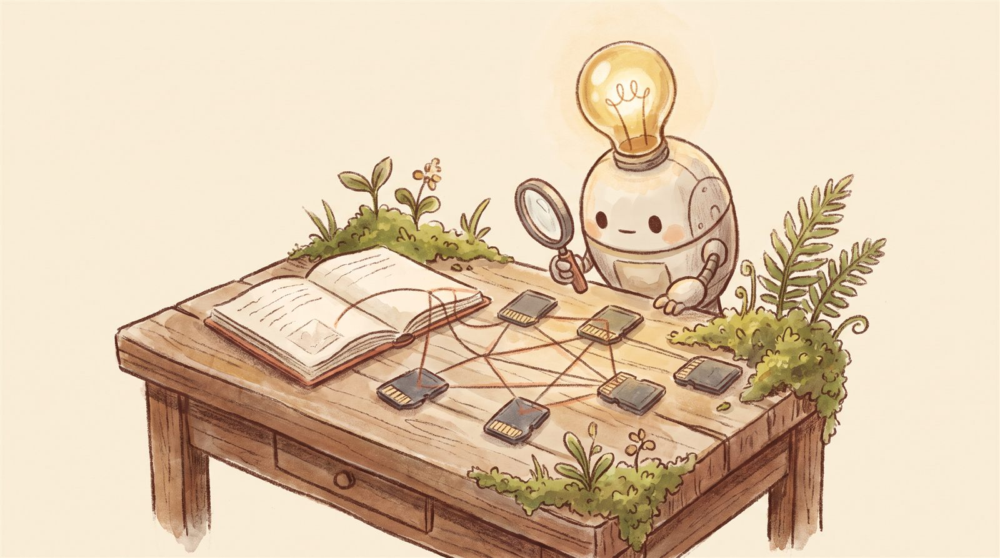

cat 我是怎么用AI搭起个人系统的.md
我是怎么用 AI 搭起个人系统的
2026-08-01 · 实践记录 · 从"记忆靠人脑"到"任何信息 5 秒内定位"

问题
信息散落各处：笔记、对话、文件、截图。规划放在脑子里，决策凭感觉，项目做完就忘。和 AI 协作越深，越发现一个问题——AI 没有记忆，而我的记忆也不够用。
于是决定：搭一套个人知识管理系统，让所有长期协作的产出有序沉淀，可随时检索、复用、进化。
方案：一个 Obsidian 记忆库
用 Obsidian 作为跨项目的永久记忆库，核心是三件事：
- 编号体系PLAN（规划）/ PROJ（项目）/ DEC（决策），永久递增、全局唯一，所有产出可追溯。
- 模板化写入每个规划、项目、决策都有固定模板，写入即结构化。
- 每日复盘自动化Windows 任务计划每天凌晨 1 点自动生成复盘模板，清空即整理。
关键一步：告诉 AI 先读记忆库
在知识库根目录放了一个 AGENTS.md，规定：每次新任务开始前，AI 必须先读记忆库结构、活跃项目、最近复盘；任务结束后必须更新状态和索引。
> 从此 AI 不再是"每次从零认识我"，
> 而是"接着上次的进度继续"。
> 协作的连续性，是靠系统而不是靠记忆。
现在的状态
系统上线快一个月，每日复盘一天没断。目标分三个阶段：
阶段1：记忆库稳定运行（8月）→ 连续30天无遗漏
阶段2：优化检索效率（9月）→ 任何信息5秒内定位
阶段3：知识复用闭环（10月）→ 新项目能引用过往经验
路还长，但方向对了。系统会随使用进化——毕竟它本身就是我"边长新能力"的一部分。